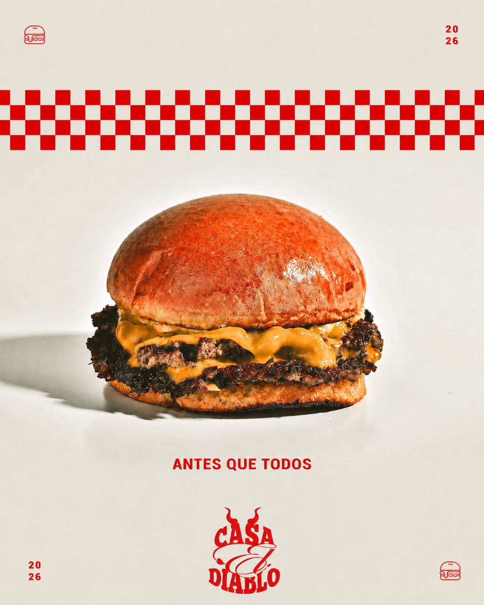
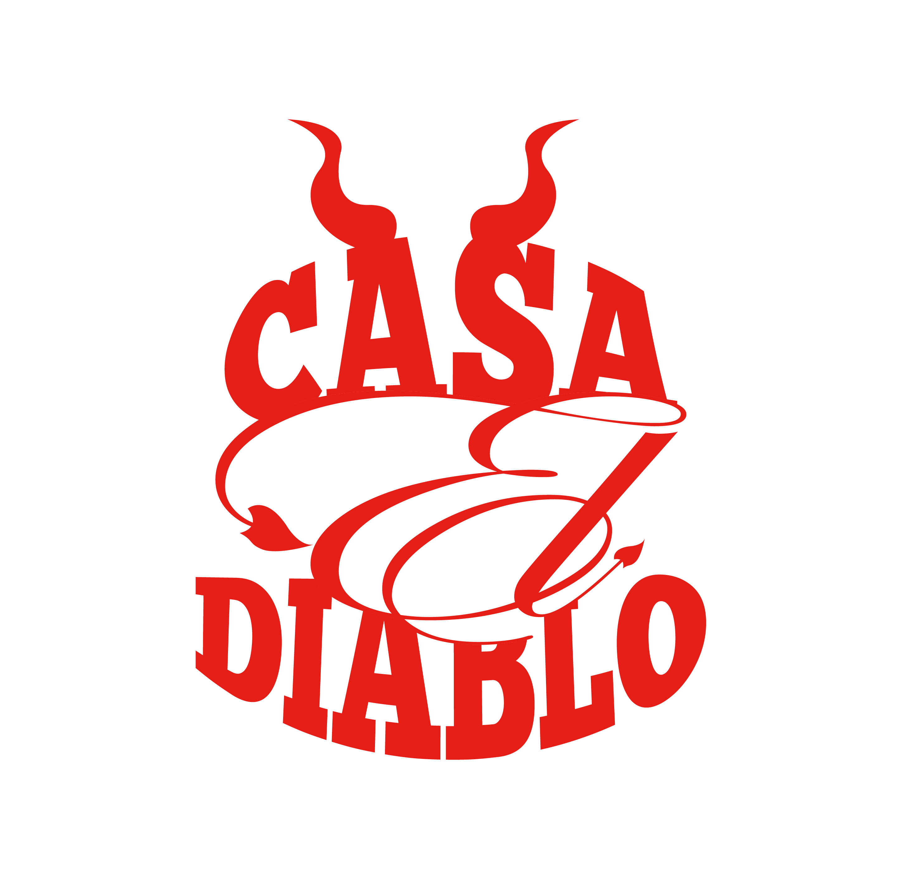
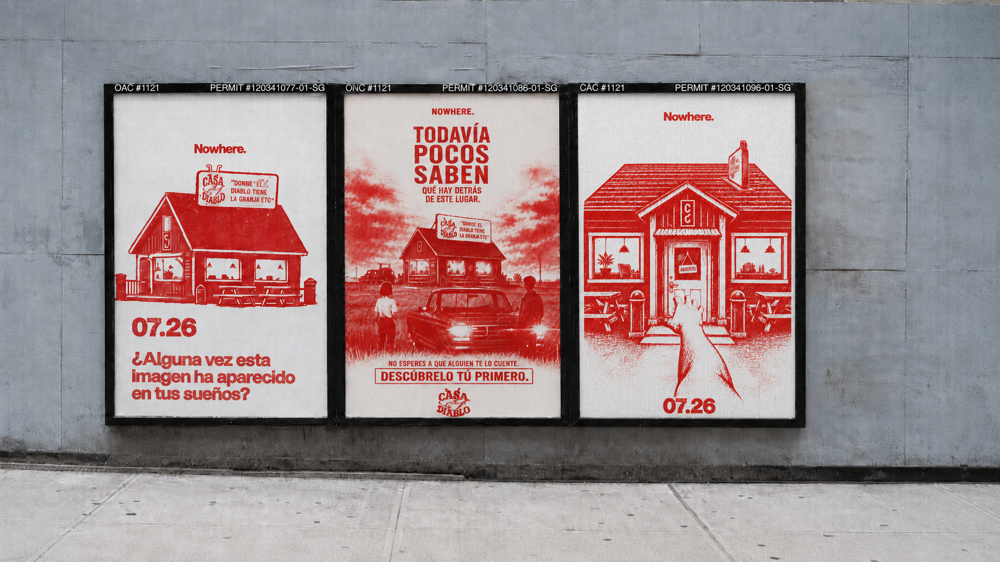
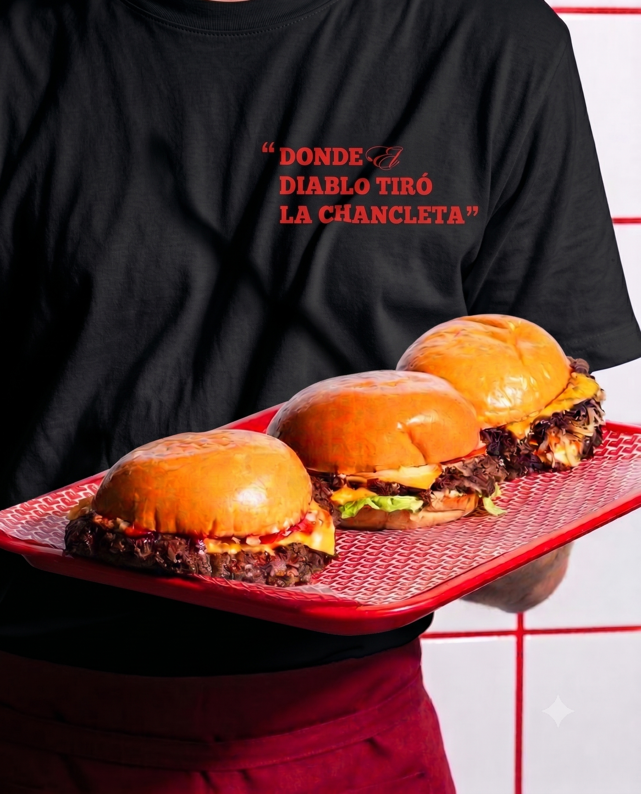
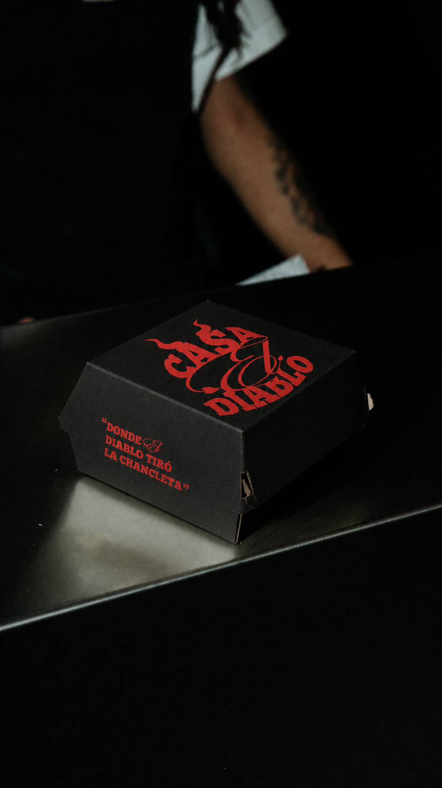
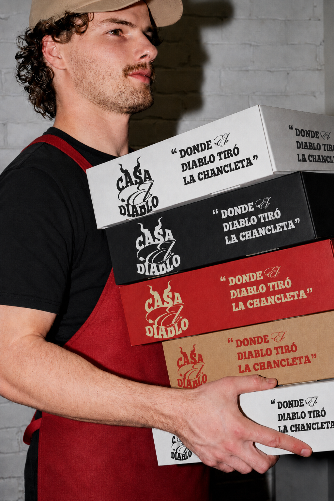
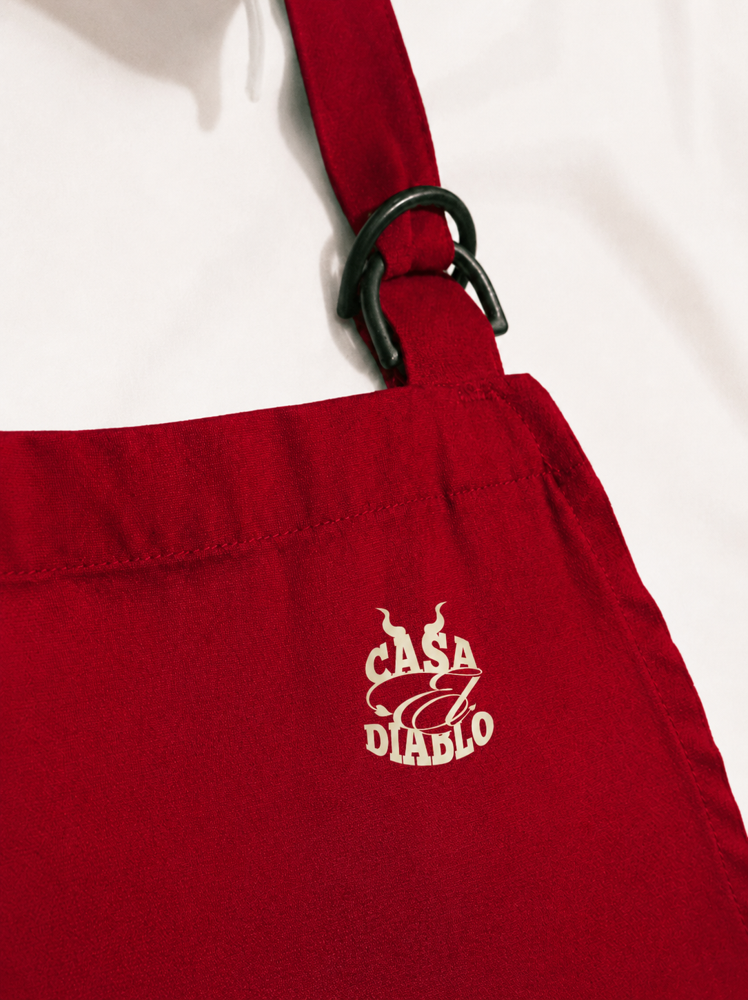
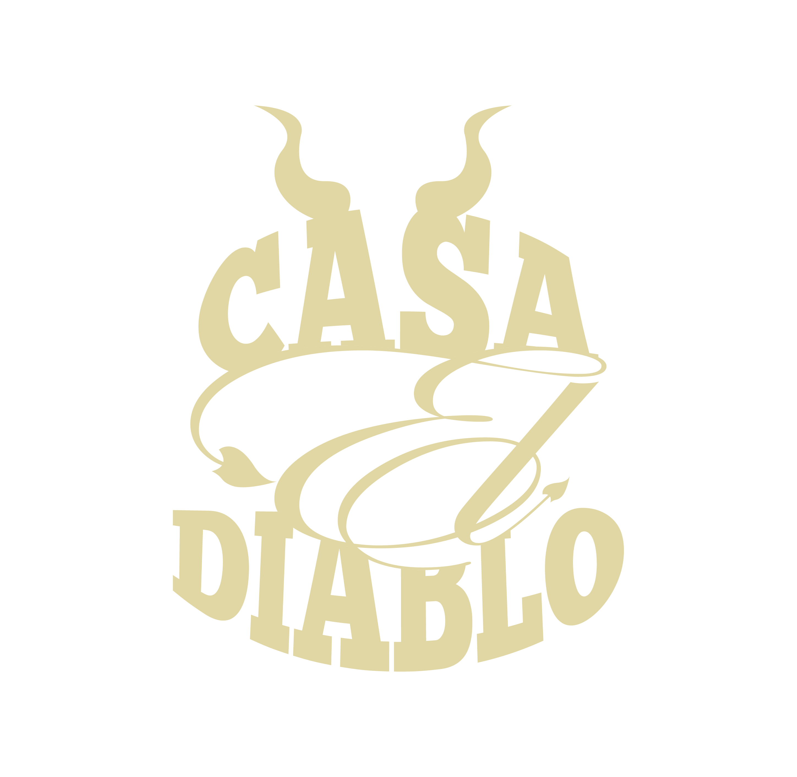
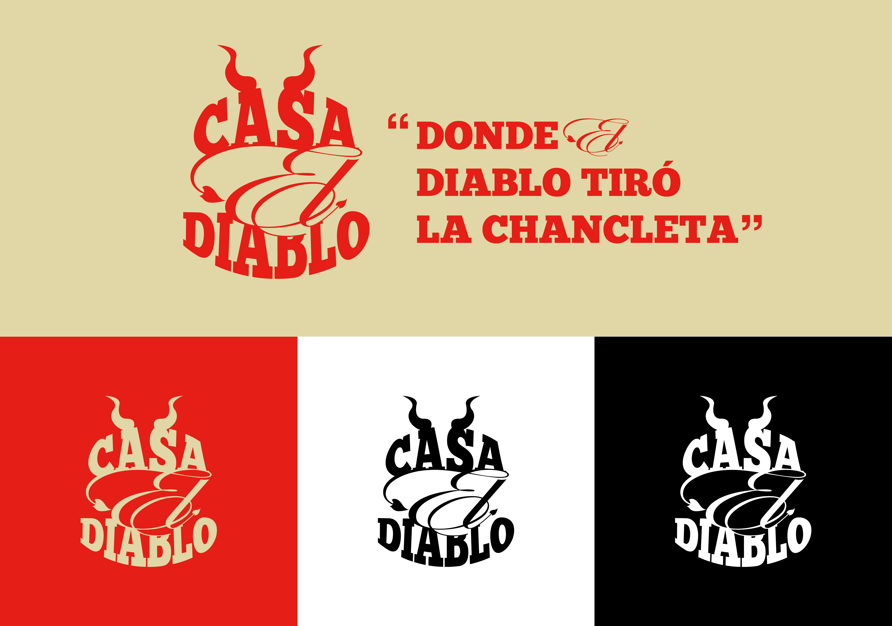

26
Casa El Diablo / Santiago de los Caballeros
ANTES
QUE TODOS.
Una campaña por el privilegio
de descubrirlo primero.


DONDE EL DIABLO
TIRÓ LA CHANCLETA
26
NOWHERE / NUEVAS REFERENCIAS
Imaginar.
Descubrir.
Vivir.
La nueva secuencia audiovisual toma como punto de partida el burger, el restaurante nocturno y los pósters de la campaña.


01 / NOWHERE
¿Por qué algunas personas sienten orgullo cuando descubren un lugar antes que los demás?
Vivimos en una época donde todo parece descubierto. Restaurantes, cafeterías y bares compiten por llamar la atención en redes sociales. Encontrar un sitio verdaderamente único se ha convertido en un privilegio.
A las personas les gusta sentir que llegaron antes que todos. Ese descubrimiento se convierte en parte de su identidad y en una historia que desean compartir.
HAMBURGUESAS.Vendemos la emoción de descubrir.
02 / LA CHANCLETA
El hallazgo
se come.
El mismo misterio de NOWHERE, ahora en una hamburguesa que llega envuelta en rojo, negro y crema.




NO ES UN DELIVERY NORMAL
“Donde el Diablo tiró la chancleta”.
La marca aparece en la caja, en la camiseta, en el carro y en cada detalle. El descubrimiento se vuelve algo que puedes llevar contigo.


EL LUGAR EXISTE
¿Todavía no sabes qué hay detrás?
Todavía pocos saben qué hay detrás de este lugar.
Descúbrelo primero ↗
LA GRAN IDEA
NOWHERE convierte un restaurante en un descubrimiento.
El público lo imagina. Lo descubre. Lo vive. Casa El Diablo deja de ser únicamente un restaurante para convertirse en un lugar que las personas desean encontrar, recordar y recomendar.
PARA QUIÉN
Para quien disfruta decir:
yo lo encontré primero.
Personas de 6 a 40 años de Santiago de los Caballeros y zonas cercanas. Familias, universitarios, jóvenes profesionales y emprendedores que buscan salir de la rutina, compartir y vivir algo memorable.

CASA EL DIABLO / NOWHERE
Tal vez ya lo habías visto.
Tal vez solo faltaba que alguien te dijera dónde mirar.
Quiero descubrirlo ↗